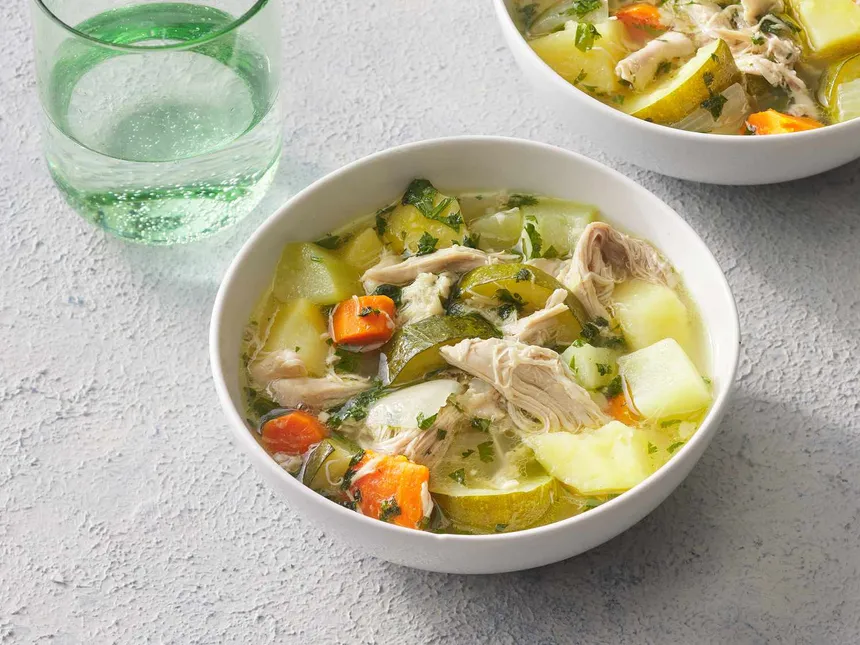

Caldo de Pollo

Description
Caldo de pollo is a type of Mexican chicken soup. Unlike other Latin
American chicken soups, it uses whole chicken pieces instead of
shredded or chopped meat. It also calls for hearty vegetables like
potatoes and carrots, cut into large chunks.
Ingredients
-
Chicken: Start with five pounds of chicken leg
quarters.
-
Water: The broth starts with two gallons of
water.
-
Seasonings: Season the caldo de pollo with
minced garlic, salt, garlic powder, and chicken bouillon.
-
Vegetables: You’ll need carrots, potatoes,
zucchini, a chayote, and an onion.
-
Cilantro: Stir fresh cilantro into each bowl
before serving.
Steps
-
Boil the water, chicken, and seasonings (besides the chicken
bouillon) together.
-
Reduce to a simmer and cook until the meat falls off the bone.
-
Stir in the bouillon and vegetables, then simmer until the
veggies are tender.
- Stir in the cilantro.